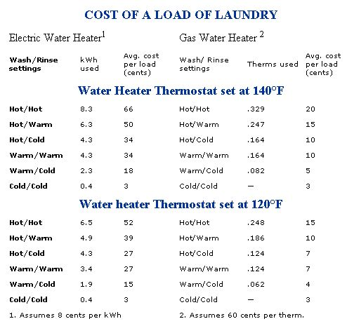

Taking Yourself To The Cleaner's
Cleaning clothes at home and saving money, including: washing machine cycle options, water level controls, spin speed, efficient drying.
By the Mother Earth News editors
October/November 1992
Energy Tips
Advice on cleaning your clothes ... for less
One of the most expensive things you do in your home is heat water. The average American house hold can easily eat up well over $300 per year just turning cold water into hot. The washing machine is a prime culprit. Each load requires 30 to 40 gallons of hot water. Yet, unlike dishwashers, washing machines can use cooler-temperature water with perfectly adequate results for most clothes. And if you are in the market for a new machine, there are a variety of options you can look for in your quest to save fuel...and money.
Wash and Rinse Cycle Options
Choose a washing machine that offers plenty of choices for energy-conserving wash and rinse cycles. The table at right shows the average energy use for washing machines with both electric and gas-fired water heating (water temperature set at 140°F and 120°F). The dramatic differences in energy use with these different wash/rinse cycles are obvious. Warm wash cycles generally clean clothes perfectly well, and, with proper detergents and pre-soaking, coldwater washing may be fine. Note: With more oily stains, hot water may be required for satisfactory cleaning. You should experiment with the different cycle options and find one that meets your needs. (Cold-water rinses are no less effective than hot or warm rinses.)
Options to vary the cycle length have a very small effect on energy consumption, but some washing machines feature a "sudssaver" option that stores the wash water from one load of lightly soiled clothes to use for the next load. A pre-soak cycle may allow you to get the same cleaning performance using a warmwater wash as you are used to getting with hot water-while using less total energy.
Water-Level Controls
Choose a machine that also lets you select lower water levels when you are doing smaller loads. For a given temperature cycle, energy use is almost directly proportional to hot-water use. The lowest setting may use just half as much water as the highest. In general, you'll save energy by running one large load instead of two medium loads. (Some models feature advanced electronic controls to automatically adjust the water level according to the size of the load.)
Unfortunately, most manufacturers do not publish the actual water use of their machines in different settings, so it is difficult to compare one brand to another.
Faster Spin Speed
Faster spin speeds can result in better water extraction, and thus reduce energy required for drying. However, too high a speed can increase wrinkles, which require ironing to remove-possibly using more total energy. Ask your dealer about spin speed, water extraction, and optimal fabric care. (Front-loading washing machines generally spin at a faster speed than toploaders.)
Front-Loading Machines
Front-loading (horizontal axis) washing machines use one-third less water (and energy) than standard top-loading (verticalaxis) machines. In some cycles, the savings are even greater. On top of this, Consumer Reports magazine claims better overall washing performance with a frontloading machine. Currently, there is only one manufacturer of full-size, home-use, frontloading washing machines in the United States: White Consolidated Industries, which makes front-loading machines for White Westinghouse, Gibson, and Sears. Available front-loading machines have somewhat smaller capacities than most top-loading machines. Because these load through the front, you can buy stackable models if your space is tight.
It is interesting to note that almost all washing machines sold in Europe feature horizontal axis drums (they may be either front-loading or top-loading).
Be sure to check the EnergyGuide Labels. All new washing machines must display these. Yet while they help you compare energy efficiency, they do not tell you he whole story. Models with smaller capacities will have better EnergyGuide ratngs, but the smaller capacity may mean hat you have to run the machine more ofen, and it may cost more to operate. Also, he labels do not take other energysaving eatures into account. So you should not base your buying decision solely on these EnergyGuide figures.
Efficient Drying
Dryers work by heating and aerating clothes, and operation of both electric and gas-fired models is pretty straightforward. Generally, gas dryers are much less expensive to operate than electric models. The new breed of dryers is often equipped with a moisture sensor, which shuts off the machine when the clothes are dry. Some of these sensors simply monitor the temperature of the exhaust air, while others measure humidity in the drum. The latter type is slightly more efficient, yet either will provide a 10% to 15% increase in efficiency over conventionally timed models. They will also save you ironing time, as overdried clothes tend to wrinkle.
If possible, install your dryer in a ventilated and heated place. The vent tube which channels exhaust air from the dryer should be as short and straight as possible. Do not use flexible vinyl duct because it restricts air flow, can be crushed, and may not with stand the high temperatures dryers generate. It's especially important to ventilate the laundry room if the dryer is discharging air inside, as the increased moisture in the air will only make the dryer work harder. If discharging outside, invest in a hood which effectively constricts the flow of cold outside air, as it will only compete with the warmer air in the machine and reduce efficiency. Most models come equipped with some sort of hood cover, but it's well worth the additional $10 to $15 for a more efficient one.
Although it may seem a small matter, don't forget to change the lint screen before drying. A clogged filter will restrict air flow by 20% to 30%, with a corresponding loss of efficiency. Lastly, don't add wet items to a partially dried load.
From Consumer Guide to Home Energy Savings, copyright © 1991, published by the American Council for an Energy-Efficient Economy (ACEEE). For more information, write to: ACEEE, 2140 Shattuck Ave., #202, Berkeley, CA 94704.
 |
 |
|